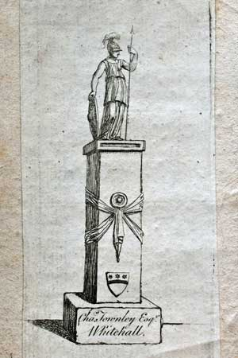
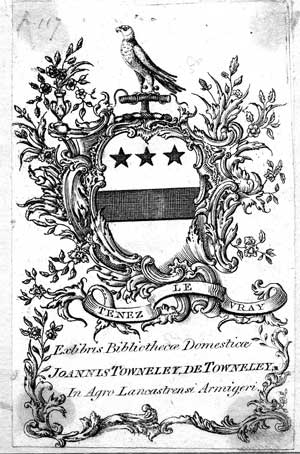

Charles Townley's book plate for Whitehall, Westminster

John Towneley's book plate for Corney House, Chiswick

John Towneley's book plate for for Towneley
In 1712, the family library passed to Richard Towneley (1689-1735) 'the Jacobite'. He almost lost everything when he was tried for treason after the Jacobite rebellion of 1715. It was after 1760 before two members of the family would have the spare cash to create their own libraries. These were Richard's grandson son Charles Towneley (1737-1805) and Richard's second son John Towneley (1731-1813). Charles inherited the Towneley estates and with it the family library when his father, William, eldest son of Richard 'the Jacobite', died in 1742.
Charles is best known as a collector of classical antiquities. In 1770 he decided to base himself in London but made regular trips back to Lancashire. He never married. His first London home was in Whitehall where he established a library separate from the family library as can be seen from his Whitehall book-plate. There is a catalogue of this library, dated 1771, in Chetham's Library [A.2.93] and also another [A.3.137] of his later library in Park Street, Westminster. On his death in 1805, the family library first passed to his brother Edward and when he died in 1807, it went to Uncle John.
John Towneley lived at Corney House in Chiswick and commissioned a book-plate for his library there. There is a catalogue of his books at Chiswick and at Park Street, Westminster, together with a diary of his visit to Towneley in 1807 in the Museum's collection at Towneley. After 1807 his book-plate was altered to reflect his Towneley inheritance. John was particularly fortunate in being left a number of properties by relatives prior to him inheriting the Towneley estate in 1807 so he had ample means to indulge his passion for books. His main interests seem to have been early printed books, particularly well illustrated ones, and English topography.
John died in May 1813 and shortly after his son Peregrine sold his father's library as the Bibliotheca Towneleiana in two major sales conducted by Evans in 1814 and 1815. A copy of the catalogue from the sales is available through Harvard University Library's page delivery service . Evans sold a final small part of the library in May 1816 at the same time as the sale of Auditor Harley's collection. Only a small number of books from the family library appear to have been included in these sales.
On the death of Charles Towneley (1803-1877), Peregrine's elder son, his library at Charles Street, Berkeley-square, London, was sold by Sotheby, Wilkinson and Hodge on April 19th and 20th, 1877. There were few if any of the family's printed books in this sale but a number of genealogical manuscripts were included and these are now in the Bodleian Library.
With the death of John Towneley (1806-1878), brother of Charles, the male line of the Towneley family ended and the family library was sold at Sotheby's on 18-28 June 1883. There are very few books published later than 1813 in the 1883 sale and Peregrine never had his own book-plate but seems to have used that of his father. Peregrine's son, Charles, also had no heraldic book-plate but pasted a label, bearing his name only, over the old family book-plates. The auction of the printed books (Towneley Books Auction Catalogue 18th - 26th June 1883 [6.3 Mb.]) took place over the first eight days when over 9,000 volumes were sold in 2815 lots and produced about £4,500. The main interest lay in the manuscripts (Towneley Manuscripts Auction Catalogue 27th - 28th June 1883 [176 kb.])which occupied the final two days of the sale in 241 lots and made the family £4,054 6s. 6d. the richer in cash.
The library of Richard 'the virtuoso' was not dispersed by the 1883 sale but had already to a large extent been dispersed bit by bit over the previous 175 years. Perhaps as few as 200 books in the sale catalogue of 1883 can be attributed to the catalogue now in Chetham's Library.
Charles Townley's book plate for Whitehall, Westminster
John Towneley's book plate for Corney House, Chiswick
John Towneley's book plate for for Towneley